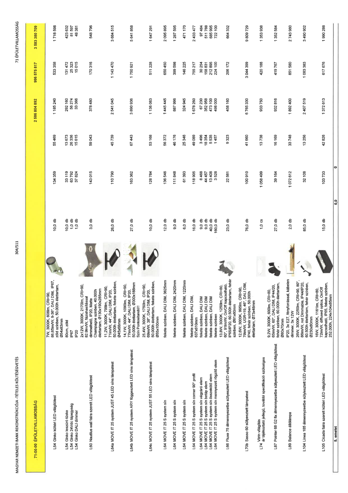

| Tétel | Menny. | Egys. | Anyag e.ár (net HUF) | Díj e.ár (net HUF) | Anyag összesen (net HUF) | Díj összesen (net HUF) | Anyag+Díj összesen (net HUF) |
|---|---|---|---|---|---|---|---|
| 71-00-00 ÉPÜLETVILLAMOSSÁG | NaN | NaN | 0 | 0 | 2 586 804 892 | 996 575 817 | 3 583 380 709 |
| 7W, 3000K, 608lm, CRI>90, 86,85lm/W, 9-36°, DALI DIM, IP67, zöld színben, 50.000h élettartam, Ø54x83mm | 0 | 0 | 0 | 0 | 0 | 0 | 0 |
| L54 Ginko kültéri LED világítótest | 10,0 | db | 134 359 | 55 469 | 1 185 240 | 533 358 | 1 718 598 |
| 80cm, zöld | 0 | 0 | 0 | 0 | 0 | 0 | 0 |
| L54 Ginko leszúró tüske | 10,0 | db | 33 119 | 13 673 | 292 160 | 131 472 | 423 632 |
| IP67 | 0 | 0 | 0 | 0 | 0 | 0 | 0 |
| L54 Ginko 24Vdc tápegység | 1,0 | db | 63 792 | 26 336 | 56 274 | 25 323 | 81 597 |
| IP20 | 0 | 0 | 0 | 0 | 0 | 0 | 0 |
| L54 Ginko DALI dimmer | 1,0 | db | 37 824 | 15 615 | 33 366 | 15 015 | 48 381 |
| 2x12W, 3000K, 2170lm, CRI>90, 82,9lm/W, fázishasítással dimmelhető, IP20, Matte Champagne színben, 40.000h élettartam, Ø130x190x285mm | 0 | 0 | 0 | 0 | 0 | 0 | 0 |
| L60 Nautilus wall falra szerelt LED világítótest | 3,0 | db | 143 015 | 58 043 | 378 480 | 170 316 | 548 796 |
| 11,2W, 3000K, 799lm, CRI>90, 71lm/W, 44°, DALI DIM, IP20, 50.000h élettartam, fekete színben, Ø45x68mm | 0 | 0 | 0 | 0 | 0 | 0 | 0 |
| L64a MOVE IT 25 system JUST 45 LED síns lámpatest | 26,0 | db | 110 790 | 45 739 | 2 541 045 | 1 143 470 | 3 684 515 |
| 14,1W, 3000K, 1090lm, CRI>90, 77lm/W, 44°, DALI DIM, IP20, 50.000h élettartam, Ø300x188mm Szín Pontosítandó!! | 0 | 0 | 0 | 0 | 0 | 0 | 0 |
| L64b MOVE IT 25 system ARY függesztett LED síns lámpatest | 27,0 | db | 163 362 | 67 443 | 3 890 936 | 1 750 921 | 5 641 858 |
| 25,4W, 3000K, 1750lm, CRI>90, 69lm/W, 38°, DALI DIM, IP20, 50.000h élettartam, fekete színben, Ø55x100mm | 0 | 0 | 0 | 0 | 0 | 0 | 0 |
| L64c MOVE IT 25 system JUST 55 LED síns lámpatest | 10,0 | db | 128 784 | 53 168 | 1 136 063 | 511 228 | 1 647 291 |
| fekete színben, DALI DIM, 3625mm | 0 | 0 | 0 | 0 | 0 | 0 | 0 |
| L64 MOVE IT 25 S system sín | 12,0 | db | 136 546 | 56 372 | 1 445 445 | 650 450 | 2 095 895 |
| fekete színben, DALI DIM, 2420mm | 0 | 0 | 0 | 0 | 0 | 0 | 0 |
| L64 MOVE IT 25 S system sín | 9,0 | db | 111 848 | 46 176 | 887 996 | 399 598 | 1 287 595 |
| fekete színben, DALI DIM, 1220mm | 0 | 0 | 0 | 0 | 0 | 0 | 0 |
| L64 MOVE IT 25 S system sín | 6,0 | db | 61 393 | 25 346 | 324 945 | 146 225 | 471 170 |
| fekete színben, DALI DIM, 637x610mm | 0 | 0 | 0 | 0 | 0 | 0 | 0 |
| L64 MOVE IT 25 S system sín corner 90° profil | 16,0 | db | 118 905 | 49 089 | 1 678 260 | 755 217 | 2 433 477 |
| fekete színben, DALI DIM | 0 | 0 | 0 | 0 | 0 | 0 | 0 |
| L64 MOVE IT 25 S system sín végzáró elem | 9,0 | db | 8 468 | 3 496 | 67 230 | 30 254 | 97 484 |
| fekete színben, DALI DIM | 0 | 0 | 0 | 0 | 0 | 0 | 0 |
| L64 MOVE IT 25 S system sín betáp elem | 9,0 | db | 44 457 | 18 354 | 352 958 | 158 831 | 511 788 |
| fekete színben, DALI DIM | 0 | 0 | 0 | 0 | 0 | 0 | 0 |
| L64 MOVE IT 25 S system sín összekötő elem | 40,0 | db | 13 408 | 5 535 | 473 100 | 212 895 | 685 995 |
| fekete színben | 0 | 0 | 0 | 0 | 0 | 0 | 0 |
| L64 MOVE IT 25 S system sín mennyezeti rögzítő elem | 160,0 | db | 3 528 | 1 457 | 498 000 | 224 100 | 722 100 |
| 13,8W, 3000K, 1250lm, CRI>80, 60°, 91lm/W, On/Off kapcsolható, IP65/IP20, 60.500h élettartam, fehér színben, Ø81x60mm | 0 | 0 | 0 | 0 | 0 | 0 | 0 |
| L66 Fluxe 75 álmennyezetbe süllyesztett LED világítótest | 23,0 | db | 22 581 | 9 323 | 458 160 | 206 172 | 664 332 |
| 12,6W, 3000K, 995lm, CRI>90, 79lm/W, UGR<19, 46°, DALI DIM, IP40, fehér színben, 50.000h élettartam, Ø73x48mm | 0 | 0 | 0 | 0 | 0 | 0 | 0 |
| L70b Sasso 60 süllyesztett lámpatest | 76,0 | db | 100 910 | 41 660 | 6 765 330 | 3 044 399 | 9 809 729 |
| NaN | 0 | 0 | 0 | 0 | 0 | 0 | 0 |
| L74 Vitrin világítás ár tájékoztató jellegű, további specifikáció szükséges | 1,0 | cs | 1 058 499 | 13 738 | 933 750 | 420 188 | 1 353 938 |
| 9,2W, 3000K, 600lm, CRI>80, 65lm/W, 60°, DALI DIM, IP44/20, fehér színben, 60.000h élettartam, Ø80x70mm | 0 | 0 | 0 | 0 | 0 | 0 | 0 |
| L87 Pointer 68 G2 fix álmennyezetbe süllyesztett LED világítótest | 27,0 | db | 39 164 | 16 169 | 932 816 | 419 767 | 1 352 584 |
| IP20, 3x E27, fényforrással, kábelen dimmer, 3x 12W | 0 | 0 | 0 | 0 | 0 | 0 | 0 |
| L89 Balance állólámpa | 2,0 | db | 1 072 612 | 33 748 | 1 892 400 | 851 580 | 2 743 980 |
| 26W, 3000K, 2250lm, CRI>90, 80°, 86lm/W, not Dimmable, IP44/IP20, 60.500h élettartam, fehér színben, Ø230x80mm | 0 | 0 | 0 | 0 | 0 | 0 | 0 |
| L104 Linea 185 álmennyezetbe süllyesztett LED világítótest | 85,0 | db | 32 108 | 13 256 | 2 407 519 | 1 083 383 | 3 490 902 |
| 16W, 3000K, 1161lm, CRI>80, 72lm/W, diffused optics, On/Off kapcsolható, IP65, fekete színben, 252.000h, 224x104x85mm | 0 | 0 | 0 | 0 | 0 | 0 | 0 |
| L105 Cicada falra szerelt kültéri LED világítótest | 15,0 | db | 103 733 | 42 826 | 1 372 613 | 617 676 | 1 990 288 |
| 5. emelet | NaN | NaN | 0 | 0 | 0 | 0 | 0 |
